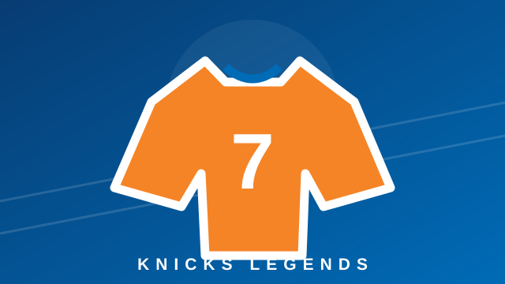
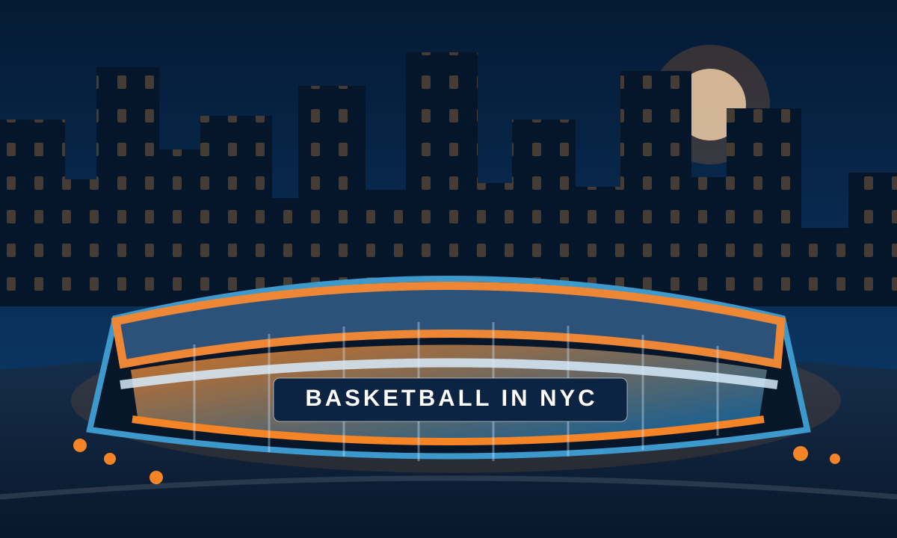
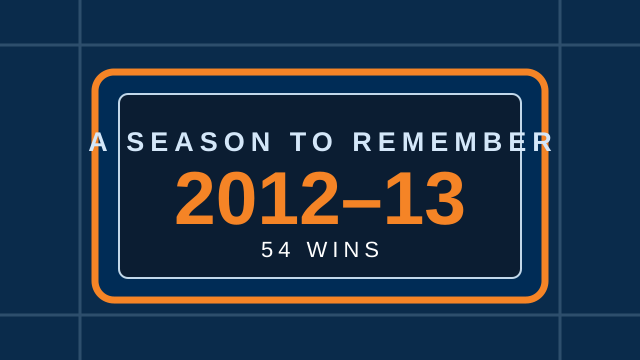
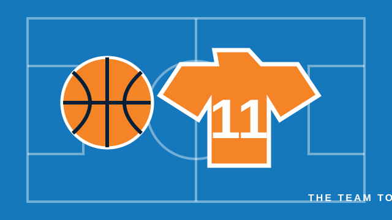

THE PLAYERS
Knicks Legends
Carmelo is getting his own spot here. He was my favorite player growing up. I'll also write about some of the older Knicks legends.
Suggest a playerMy favorite players, seasons, and memories.
I've been a Knicks fan for as long as I can remember. There have been some pretty bad seasons, but I never wanted to root for anyone else. I wanted to make a site about my favorite Knicks players and memories, along with the team we have now.
See what’s on the site
The Garden is a big part of what makes the Knicks special to me. Even in the years when the team was terrible, people still showed up to watch. I want this section to explain why the building means so much to Knicks fans.
I went to a Knicks game against the Thunder in 2019. The Knicks lost, but I still remember seeing Paul George and Russell Westbrook play. It was my first Knicks game, so I was excited to be there anyway.
These are the main sections I want to build out.

Carmelo is getting his own spot here. He was my favorite player growing up. I'll also write about some of the older Knicks legends.
Suggest a player
I'll rank the ten Knicks seasons I think mattered most and explain why. The 2012–13 Melo season is definitely making my list.
Suggest a season
This will be the page about the Knicks right now. I'll focus on Brunson, the rest of the team, and how they're doing.
Official Knicks websiteI want other Knicks fans to be able to tell me what they like about the site and what I should add. I'll put a short feedback form here once I build the full page.